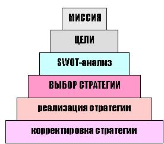
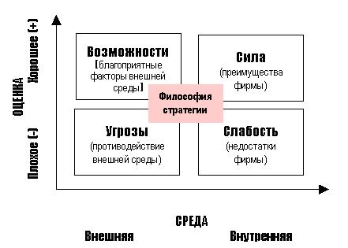
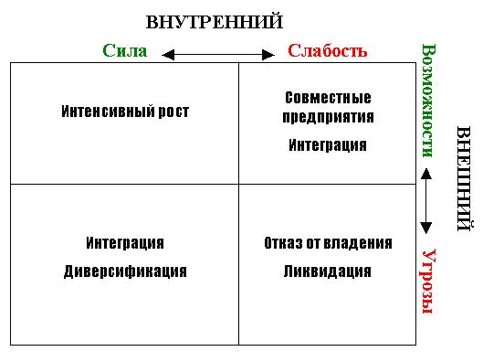
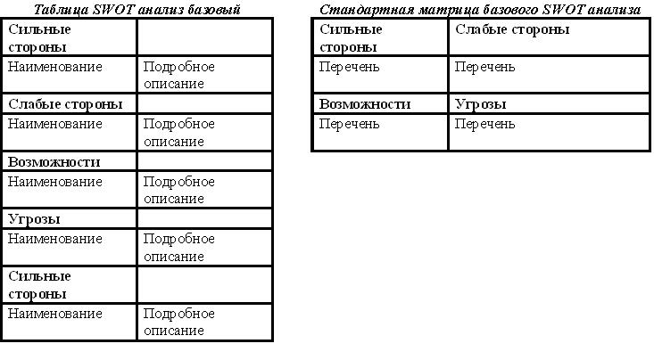
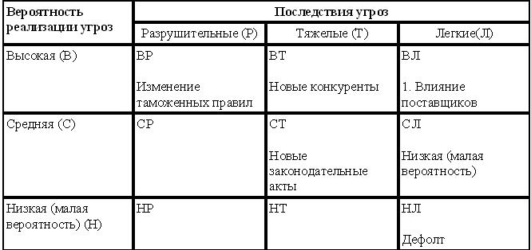
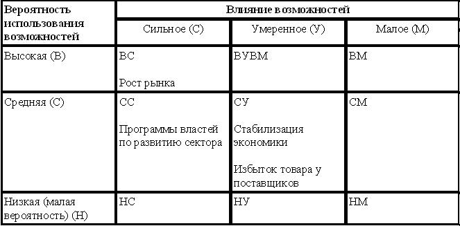
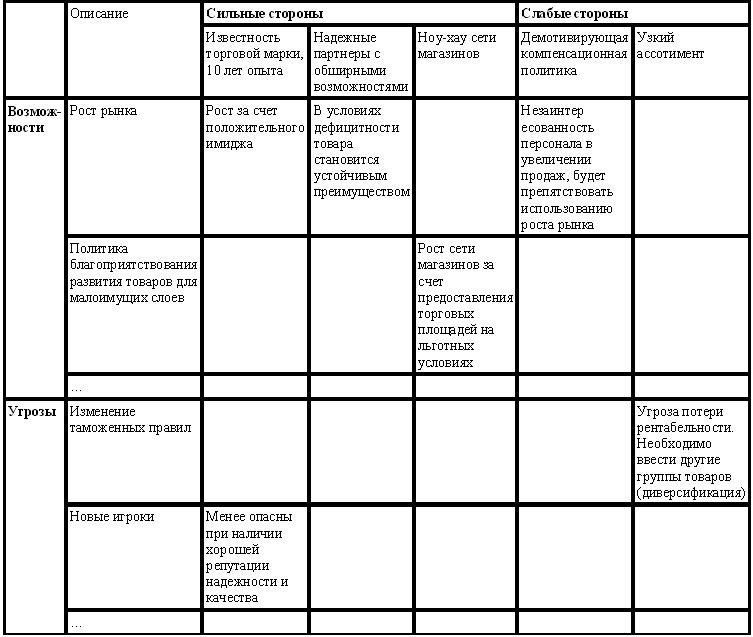
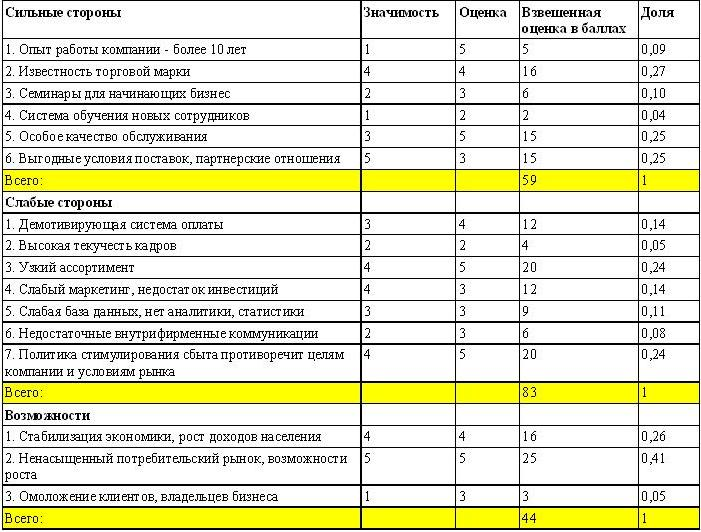

SWOT - анализ
Стратегический менеджмент
Стратегический подход к управлению деловыми организациями начал использоваться во всем мире еще в 20-30 г.г. ХХ столетия. Но особенно интенсивно процесс перехода к управлению на основе развития начался в 60-е, когда обострилась конкуренция европейского и американского бизнеса с Японией и компании вынуждены были перестраивать свою деятельность с учетом новых реалий. Вот тогда-то и потребовался подход, который бы обеспечил возможность компаниям своевременно адаптироваться к внешним как благоприятным, так и неблагоприятным условиям, прогнозировать альтернативные варианты развития компании и управлять этим развитием, используя новые методологии предвидения и моделирования тенденций изменений макро и микро окружения. Так в лексикон менеджмента вошло понятие стратегического менеджмента (или стратегического управления). Еще одним важным аспектом стратегического управления стало внимание к тенденциям изменения внутренней среды компании и, прежде всего, к интересам и устремлениям ее персонала.
По мнению большинства специалистов, современный стратегический менеджмент - «это программный способ мышления и управления, обеспечивающий согласование целей и возможностей предприятия с интересами «всех заинтересованных в его деятельности сторон».
Любая современная методология управления стратегический менеджмент должен опираться на соответствующую информационную систему, только с помощью которой можно проанализировать и оценить тенденции - настоящие, прошлые и будущие. Иными словами, необходима технология проведение постоянной диагностики как внутренних ресурсов и возможностей компании, так и внешней среды.
В бизнес-инжиниринге, новейшей технологии управления организационным развитием, под стратегическим управлением понимается выработка стратегий деятельности компании с помощью формализованных процедур, которые расписаны по этапам и применяемым техникам анализа и моделирования. Эти процедуры направлены на построение моделей будущего состояния компании, а также программ перехода к этому состоянию («стратегических планов»), где все мероприятия также расписаны по определенным трафаретам и с соответствующей степенью детализации.
Даже для упрощенных вариантов данного контура, необходима постановка следующего управленческого цикла:
- мониторинг и анализ факторов внешней и внутренней среды,
- выработка решения и моделирование будущего состояния компании,
- разработка стратегического плана,
- контроль реализации и выработка регулирующих воздействий при отклонении от намеченных показателей
Таким образом, упрощенно можно представить следующий алгоритм процесса стратегического управления см. рис.14.10.

Рисунок 14.10 - Алгоритм стратегического управления
Как видно из рис.14.10, исходным пунктом процесса стратегического управления является формирование миссии компании.В полном объеме стратегический анализ доступен лишь очень крупным компаниям. Однако, в условиях динамично изменяющейся среды, даже для сравнительно небольших предприятий, одной интуиции руководителя становится недостаточно для успешных действий на рынке. Этим обусловлена необходимость постановки в таких компаниях ограниченных, более «дешевых» вариантов выработки стратегий. Но и для крупных компаний «очень часто затраты на количественное обоснование выбора целей и стратегий, гораздо выше эффекта от их преимуществ, по сравнению с более простыми «качественными» методами» (Э. Деминг).
SWOT-анализ (модель GETS)
SWOT - аббревиатура начальных букв английских слов: Strengths - силы; Weaknesses - слабости; Opportunities - возможности; Threats - угрозы)
Эта матрица предоставляет руководителям компании структурированное информационное поле в котором они могут стратегически ориентироваться и принимать решения.
Самым распространенным методом, оценивающим в комплексе внутренние и внешние факторы, влияющие на развитие компании является SWOT-анализ, его еще называют основным инструментом регулярного стратегического управления - матрицу «качественного» стратегического анализа, которую еще называют матрицей SWOT.
SWOT-анализ является необходимым элементом исследований, обязательным предварительным этапом при составлении любого уровня стратегических и маркетинговых планов.
Данные, полученные в результате ситуационного анализа, служат базисными элементами при разработке стратегических целей и задач компании.
По результатам ситуационного анализа можно оценить, обладает ли компания внутренними силами и ресурсами, чтобы реализовать имеющиеся возможности и противостоять угрозам, и какие внутренние недостатки требуют скорейшего устранения.
Самое привлекательное, в этом методе то, что информационное поле формируется непосредственно самими руководителями, а также наиболее компетентными сотрудниками компании на основании обобщения и согласования собственного опыта и видения ситуации.
При этом отпадает необходимость в использовании мощных дорогостоящих систем «количественного» анализа и привлечении не менее дорогих экспертов, которые, хуже зная специфику конкретного рынка и конкретного предприятия, могут в условиях ограничений по времени и неполной информации «навязать» неоптимальное решение. Но и ценность любого тщательно просчитанного «оптимального» решения, если оно появляется слишком поздно, становится равной «нулю»!
На основании последовательного рассмотрения этих факторов принимаются решения по корректировке целей и стратегий предприятия (корпоративных, продуктовых, ресурсных, функциональных, управленческих), которые, в свою очередь, определяют ключевые моменты организации деятельности.
Отметим, что стратегические решения не всегда связаны с большим временем планирования, а скорее характеризуются их влиянием на глубину перестройки бизнеса, его структуры, направлений развития, что может, например, в периоды кризисов или технологических «скачков», изменяться достаточно быстро.
Кроме того, стратегические решения связаны скорее с внешними, чем с внутренними проблемами компании - в особенности решения связанные с выбором номенклатуры продукции и сегментов рынка. Причем на эти «стратегические решения» могут сказываться как факторы ближнего, так и дальнего «окружения компании».
Поэтому внешний анализ, помимо оценки рыночной конъюнктуры, должен охватывать такие сферы, как экономика, политика, технология, международное положение и социально-культурное поведение, т.е. проводиться в соответствии с моделью GETS, что означает четыре группы внешних сил давления:
- Government - правительство;
- Economy - экономика;
- Technology - технология;
- Society - общество.
Процедуры внутреннего анализа могут и должны включать в себя оценку уникальности ресурсов и технологий, основных компонентов менеджмента, корпоративной культуры и т.п.
Оценка сильных и слабых сторон предприятия по отношению к возможностям и угрозам внешней среды как раз и определяет наличие у фирмы стратегических перспектив и возможность их реализации. Понятно, что при этом будут возникать препятствия (угрозы), которые необходимо преодолевать. Отсюда следует «…переориентация методов управления развитием предприятия с опоры на уже достигнутые результаты, освоенные товары и используемые технологии (внутренние факторы) на изучение ограничений, накладываемых внешней рыночной средой (внешние факторы)».
По существу матрица SWOT-анализа представляет собой удобный инструмент структурного описания стратегических характеристик среды и предприятия.
Методология построения матрицы первичного стратегического анализа заключается в том, что сначала весь мир делится на две части - внешнюю среду и внутреннюю (саму компанию), а затем события в каждой из этих частей - на благоприятные и неблагоприятные:
- Внешняя - Внутренняя
- Сила - Слабость,
- Возможности - Угрозы.
Общий вид матрицы первичного SWOT-анализа приведен на рис.14.11.

Рисунок 14.11 - Матрица первичного стратегического SWOT-анализа
.
Процесс заполнения матрицы должен быть выполнен максимально тщательно, т.к. на результат может повлиять даже такая вещь, как последовательность заполнения клеток матрицы. Здесь надо иметь ввиду, что на рисунке приведена только общая схема матрицы.
На практике число SWOT-факторов по каждой оси матрицы может быть значительным и существуют специальные процедуры их ранжирования и свертывания. Но еще более сильное значение имеет «субъективный фактор», привносимый участниками процесса (директор, специалисты, менеджеры) при обсуждении той или иной ситуации. За счет этого результат анализа пополняется еще и философией стратегии, которая присутствуя в рассуждениях, не вписывается ни в одну клетку матрицы, но объединяет их в единое целое. «Философия стратегии», как правило, непосредственно связана с тем «видением» (vision), которое легло в основу миссии компании.Выбор эффективных стратегий, соответствующих внутренним параметрам предприятия и его положению на рынке и, в целом, во внешней среде, производится путем построения матриц корреляционного SWOT-анализа. На рис.14.12. приведен пример такой матрицы для выбора корпоративной стратегии.

Рисунок 14.12 - Матрица корреляционного SWOT-анализа
Стратегии компании определяются, исходя из сопоставления (корреляции) описанных ранее характеристик среды и предприятия для четырех зон матрицы. Для каждой зоны матрицы получаем свои базовые стратегии.
Верхняя правая зона. Для нее характерны стратегии, направленные на компенсацию слабых сторон компании за счет хороших возможностей, предоставляемых внешней средой (создание совместных предприятий для активной работы на перспективном рынке).
Верхняя левая зона. Для нее лучшей стратегией станет упор на рост и увеличение продаж.
Нижняя левая зона матрицы. Для нее характерны стратегии направленные:
- на использование сильных сторон предприятия;
- для нейтрализации угроз внешней среды.
Фирма имеет значительные внутренние силы, но внешняя среда таит в себе много угроз. Здесь наиболее эффективными будут стратегии, направленные на смягчение внешних угроз на рынке путем диверсификации (освоения новых товаров и рынков) и интеграции бизнеса.
Нижняя правая зона. Для нее - самым разумным становится либо концентрация на узком сегменте рынка, либо уход с рынка.
Вывод. Таким образом, «разработка стратегии фирмы базируется на анализе конкретных сегментов рынка для оценки благоприятного проникновения в намеченные сферы, их использования для укрепления своих позиций». Успех при этом зависит от формального, точного, полного и всестороннего описания взаимодействия предприятия с внешней средой. Это дает некоторую гарантию, что стратегические решения приняты на основе анализа всей доступной информации и ничего не упущено!
Кроме того, результаты анализа и принятые на его основании решения должны фиксироваться и накапливаться, т.к. накопленный структурированный опыт («база знаний») является основой управленческой стоимости любой компании. Здесь как нельзя лучше подходят технологии и инструменты бизнес-инжиниринга, опирающиеся на систему информационных моделей предприятия и моделей внешней среды. Специальные модули подобных программ как раз позволяют фиксировать, проводить мониторинг и сопоставлять SWOT-факторы влияющие на стратегические решения по выбору возможных направлений развития компании.
Правильно и вовремя принятые стратегические решения играют сегодня ключевую роль в успешной деятельности организации. В конечном счете именно они оказывают решающее влияние на конкурентоспособность продукции и предприятия в целом.
Основные параметры SWOT-анализа
Неотъемлемыми частями SWOT-анализа можно назвать внутренний аудит компании и аудит внешней среды.
Внешний аудит, или анализ угроз и благоприятных возможностей внешней среды.
В процессе проведения внешнего аудита оценивается привлекательность рынка и другие возможности и угрозы внешней среды.
Оценивая привлекательность рынка, следует обратить внимание на:
- Тенденции рынка. Целью анализа тенденций рынка является описание развития спроса в каждом из сегментов рынка.
- Поведение покупателей. Необходимо оценить поведение покупателя при покупке, использовании и владении товара, покупательские привычки, факторы, влияющие на процесс совершения покупки, анализ имиджа торговой марки или компании.
- Структура сбыта. Здесь необходимо оценить ожидаемое состояние сети дистрибьюции, ожидания и мотивацию партнеров кампании.
Конкурентную среду. Не забудьте оценить в этом разделе анализа все четыре конкурентные силы по Портеру, рыночную силу потребителей и поставщиков, угрозу товаров субститутов (заменителей), барьеры входа на рынок.
Кроме того, важное влияние на успешность компании могут оказывать следующие факторы внешней макросреды, на которые, как правило компания влиять не может:
- Законодательство и политическая среда, ожидаемые или возможные его изменения. Законодательные акты и другие нормативные документы, которые могут повлиять на работу компании. Например, для многих торговых и производственных компаний критически важными являются изменения в таможенном законодательстве, особенно для малого и среднего бизнеса. Даже изменение таможенных пошлин, если не быть готовым к таковому, может превратить вполне успешную небольшую компанию в банкрота.
- Экономическое положение страны, региона. Изменение показателей ВНП, возможные крупные измененияв экономике, которые могут повлиять на вашу компанию, ожидаемая инфляция и ее влияние на бизнес.Правильная оценка возможностей и угроз экономической ситуации позволит, например, своевременно внести жизненно важные изменения в ассортиментную и ценовую политику компании.
- Социально-демографические факторы. Изменение технологий. Также бывает критическим, особенно если на рынке ожидается появление товаров-субститутов, которые могут превратить товар компании в «устаревший хлам».
- Международная среда оказывает влияние на многие, но не все компании, в меньшей степени на малый бизнес.
- Экологическая среда также должна учитываться некоторыми компаниями. Затем принимаем во внимание все тенденции, которые компания может использовать и продумываем меры по нейтрализации угроз.
Внутренний аудит, анализ сильных и слабых сторон компании.
В процессе проведения внутреннего аудита компании оцениваются ресурсы фирмы, ее бизнес процессы, анализируется конкурентоспособность. В процессе проведения анализа подтверждается или изменяется формулировка устойчивых конкурентных преимуществ компании.
Ключевые факторы анализа
- Менеджемент. Оценивается потенциал сотрудников компании высшего и среднего уровня, их квалификация, мотивация, лояльность.
- Маркетинг, включая анализ коммуникационной программы (реклама, личные продажи, PR), сравнение рекламной активности с конкурентами, эффективность собственных маркетинговых усилий;
- Персонал, особенно работа торгового персонала, уровень квалификации и заинтересованности, соответствие мотивационных программ целям и задачам организации, а также анализ контактов, новых потребителей, стоимости содержания торгового персонала;
- Анализ системы сбыта компании, потребностей и запросов торговых партнеров, распределения объемов продаж по членам сети дистрибюьюции, типам посредников (опт, розница), аудит дистрибьюторов, выделение приоритетных дилеров и т.д;
- Анализ продуктового портфеля. Оцениваются текущие и ожидаемые объемы продаж, доля рынка, прибыльность по каждому из продуктов или продуктовой группе, качество, имидж марки;
- Анализируются приоритетные конкуренты, их доля рынка, возможные преимущества по издержкам, цене, имидж их товаров, их конкурентное поведение текущее и возможное, их основные слабости;
- Наличие устойчивого конкурентного преимущества, например, ресурсной базы, недоступной ближайшим конкурентам или патентованных технологий;
- Анализ ценовой политики, ценовая эластичность спроса, возможные максимально приемлемые цены для товаров компании, сравнение с ценами конкурентов, политика скидок и других программ стимулирования сбыта.
Перечисленные факторы не являются исчерпывающими. В зависимости от специфики бизнеса и рынка могут выявиться и другие факторы, требующие тщательного анализа. В тоже время не следует скрупулезно анализировать в любых ситуациях все вышеперечисленные параметры. На данном этапе важно не только объективно оценить параметры, но и выбрать среди их множества ограниченный ряд существенно важные для выживаемости, развития, роста и прибыльности бизнеса.
Из практики, дополня классическую интерпретацию SWOT-анализа
1. Ситуационный анализ это объективный взгляд стороннего человека. Для его проведения надо суметь полностью отказаться от собственных субъективных оценок.
Обязательными при этом являются оценка ситуации с предполагаемых точек зрения:
- потенциальных и действительных покупателей, клиентов компании, так называемой целевой группы (здесь могут помочь и простейшие опросы собственных покупателей и покупателей конкурентов);
- ближайших конкурентов;
- лидера рынка, если лидером не является ваша компания;
Такой подход поможет выявить отрицательные моменты, на которые не осознавая, а иногда сознательно,в компании до этого внимание не обращалось.
2. Перед выбором параметров для анализа следует определить «ключевые компетенции» или «ключевые факторы успеха» компании на рынке, т.е. факторы, связанные с технологией, производством, маркетингом, финансами и т.д., от которых зависит в значительной степени успешность или провал бизнеса на выбранном рынке, реализация стратегий и достижение целей. Ключевыми компетенциями можно назвать отличительные возможности компании, совокупность ее навыков процессов и технологий, которые являются в настоящий момент наиболее привлекательными для клиентов и которые обеспечивают наибольшее преимущество на конкурентном рынке. Например, для оптового торговца товарами низшей ценовой категории в числе КФУ можно назвать конкурентоспособные цены, вернее соотношение цены/качества, предоставление отсрочки платежей, мотивацию и профессионализм торгового персонала и т.д.
Методология проведения ситуационного анализа, матрицы SWOT-анализа
Первый этап - выделение наиболее важных параметров анализа, описан в предыдущем пункте. Определившись с параметрами, рекомендую вначале занести их по пунктам в форме описания.
Затем описанные параметры заносятся в таблицу, часто называемую матрицей SWOT-анализа. Систематизация параметров в матрицах дает возможность на этапах выбора и реализации стратегии вносить необходимые корректировки в оценку параметров и в стратегию.
Рассмотрим пример проведения ситуационного анализа для IT - компании.
ЭТАП 1. На основании внутреннего маркетингового аудита и проведенного опроса клиентов были проанализированы сильные и слабые стороны компании Х.
Сильные стороны
1. Опыт работы компании - более 10 лет на рынке.
2. Известность торговой марки X владельцам розничных торговых точек.
3. Регулярное проведения семинаров для начинающих.
4. Разработанная система обучения новых сотрудников.
5. Традиции высокого качества обслуживания.
6. Налаженные партнерские отношения с заказчиками.
Слабые стороны
1. Демотивирующая система компенсации сотрудников, не стимулирующая к увеличению продаж.
2. Большой процент текучести кадров на уровне низшего и среднего звена - около 30% за год.
3. Узкий ассортимент IT - продуктов.
4. Отсутствие инвестирования в маркетинг за исключением минимально необходимых средств на размещение рекламы. Узкая интерпретация функции маркетинга, только коммуникационная.
5. Низкий уровень подержания баз данных компании, отсутствие их анализа.
6. Недостаток внутрифирменных коммуникаций, отсутствие регулярного информирования сотрудников о результатах их труда, слабая обратная связь, являющиеся демотивирующими факторами.
7. Политика продвижения товара не отвечает целям компании и условиям рынка.
Анализ внешней среды позволил выявить следующие возможности и угрозы для развития компании:
Возможности
1. Стабилизация экономической ситуации за последние 3 года повлекла за собой увеличение уровня жизни населения.
2. Ненасыщенный рынок представляет практически неограниченные возможности для роста.
3. Процесс «омоложения» владельцев бизнеса
Угрозы
1. Высокая подверженность влиянию изменения законодательства и регулятивных мер.
2. Деятельность некоторых конкурирующие компаний снижает конкурентоспособность цен на программы.
3. Низкие барьеры входа новых компаний на рынок.
Наряду с общими сильными и слабыми сторонами, возможностями и угрозами отдельно были выявлены дополнительно сильные и слабые стороны, возможности и угрозы для розничного подразделения компании.
Сильные стороны сети магазинов «У»
1. Имеет устойчивое конкурентное преимущество в виде уникального разработанного компанией ноу-хау организации торговли, позволяющего привлекать как средне обеспеченные слои населения так население с низкими доходами и контролирующее оптимальную скорость товарооборота.
2. Торговая марка становится узнаваемой в СМИ благодаря новой программе PR.
3. Руководитель подразделения, осуществляющий необходимый уровень контроля.
Слабые стороны
1. Ассортимент перестает соответствовать тенденции изменения покупательских предпочтений.
2. Недостаточное финансирование маркетинга, включая рекламу, снижает возможности привлечения новых покупателей, и как следствие, товарооборот.
Возможности
1.Благоприятное отношение органов власти к данному типу бизнеса.
2.Тенденция отрасли к укрупнению размеров магазинов и вытеснению мелких торговых точек.
Угрозы
1. Высокая норма прибыли розничной торговли и низкие барьеры для входа делают ее крайне привлекательной для входа конкурентов, что может привести к ускорению процесса насыщения рынка и усилению конкуренции.
2. Постоянное увеличение арендной платы может снизить прибыльность магазинов.
3. Хищения персонала, преднамеренно неправильная оценка товара.
ЭТАП 2. Результаты заносятся в таблицу и матрицу SWOT см. рис.14.13.

Рисунок 14.13 - Таблица и матрица SWOT - анализа
Обычно в практике многих компаний на этом этапе использование SWOT-анализа заканчивается. Можно действительно рекомендовать остановиться на данном этапе при отсутствии опыта проведения анализа и при решении несложных задач и проблем. Если же дело касается решения важных стратегических задач или серьезных жизненно важных проблем, то желательно проделать более тщательный анализ.
ЭТАП 3. Следующим этапом возможности и угрозы, выявленные в процессе анализа, разбиваются на три группы по приоритетности, необходимости концентрации усилий и средств и тщательности мониторинга.На основании сделанного SWOT-анализа были составлены матрицы угроз и возможностей для компании Х, приведенные на рис.14.14 - 14.15

Рисунок 14.14 - Анализ угроз со стороны конкурентных сил

Рисунок 14.15 - Анализ возможностей, предоставляемых рынком
В поле немедленного реагирования попадают угрозы изменения таможенных правил и привлекательность рынка для новых конкурентов.
Угрозу прихода в отрасль новых конкурентов компания может уменьшить путем увеличения своей доли рынка и развития бренда, что требует большего внимания к развитию маркетинга и достаточному его финансированию. Угроза повышения таможенных пошлин и изменения правил ввоза товаров может быть частично снижена путем применения стратегии диверсификации и введения в ассортиментный ряд товаров, в меньшей степени подверженных данной угрозе.
Матрица возможностей, показала, что на поля наиболее благоприятных возможностей попадает возможности роста рынка. Возможности, предоставляемые растущим рынком, и положение компании в числе лидеров отрасли обуславливают применение одной из стратегий роста.
Преимущества государственных программ, стимулирующих развитие сектора важны при развитии сети магазинов компании, но их использование осуществимо только при наличии или развитии соответствующего уровня личных связей и выделении сотрудника отвечающего за данное направление в компании.
ЭТАП 4. Особенно важен для выработки правильных стратегический действий, хотя используется нашими компаниями крайне редко. С учетом выявленных возможностей и угроз выделяются основные взаимовлияющие группы «Возможности - сильные/слабые стороны» «Угрозы - сильные/слабые стороны» и составляется соответствующая матрица.
Эта фаза позволяет сделать стратегические выводы из проделанного анализа, точно структурировать проблемы и задачи, стоящие перед компанией и найти пути их решения с учетом имеющихся и предполагаемых ресурсов. Именно эта фаза SWOT-анализа определяет стратегические цели развития компании (рис.14.16).

Рисунок 14.16 - SWOT Комплексная оценка возможностей и угроз с учетом сильных и слабых сторон
Заключительным этапом становится формулировка основных стратегических направлений с учетом их важности. Стратегия формулируется на основании результатов матриц (рис.14.14, 14.15, 14-16).
Стратегические возможности и угрозы, которые требуют концентрации всех необходимых ресурсов для их реализации и соответствующие угрозы, требующие повышенного внимания и тщательного постоянного мониторинга, относятся к самой приоритетной части. Они должны находиться под постоянным контролем высшего руководства компании.
Возможностям, позволяющим ранжирование по мере освобождения требуемых ресурсов и угрозам, требующим контроля, предоставляется средний приоритет. Контроль руководства высшего и среднего звена, инвестирование из собственных или доступных кредитных источников.
Возможностям или угрозам текущего порядка дается низший приоритет. Они находятся под контролем линейного менеджмента, используются собственные источники финансирования (по мере возможности)
Полученные результаты формулируются в стратегию компании, ее цели и задачи. Вышеперечисленные матрицы составляются на основе качественных экспертных оценок.
Вариации SWOT-анализа для профессионалов
Для тех, кто знаком с методами многокритериальных балльных оценок, экспертных оценок, статистического анализа вкратце привожу несколько более сложных матриц ситуационного анализа, которые позволяют произвести более точный анализ на основе количественных показателей и оценок.

Рисунок 14.17 - SWOT взвешенная бальная оценка. Оптовое подразделение компании Х
- Для осуществления базового варианта SWOT-анализа необходимо сначала выбрать основные параметры, влияющие на развитие ситуации и/или успешность организации на рынке. Приоритетом служат ключевые факторы успеха. Рассматриваем также основные возможности и угрозы, которые могут повлиять на компанию или рассматриваемую ситуацию.
- Оцениваем представленность выделенных факторов в компании. Ориентиром для оценки работы компании по выделенным параметрам служат ожидания клиентов и достижения ближайших конкурентов и лидера рынка. Результаты оформляются в матрицу (рис.14.13)
- Проводим оценку возможностей и угроз по вероятности их наступления и степени влияния на рассматриваемую ситуацию. Результаты заносятся в таблицу (рис.14.4, 14.15)
- Проводим анализ взаимовлияния возможностей и угроз окружающей среды и сильных и слабых сторон компании. Анализ регистрируем либо в описательной форме либо в таблице (рис.14.16)
- Ранжируем выявленные факторы по степени их важности и оформляем окончательные результаты анализа.